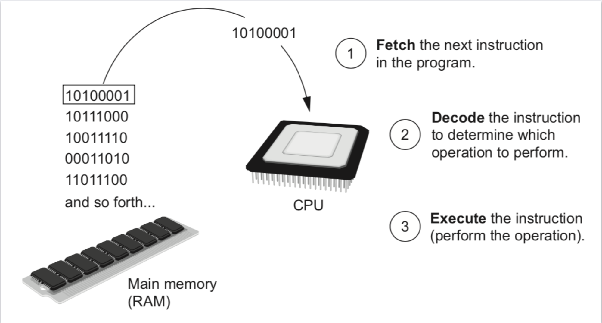
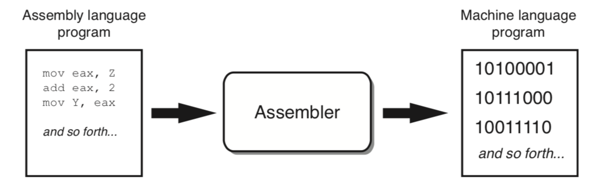

Before we begin exploring the concepts of programming, you need to understand a few basic things about computers and how they work.
The physical devices that a computer is made of are referred to as the computer's hardware. The programs that run on a computer are referred to as software.
Computers can do such a wide variety of things because they can be programmed. This means that computers are not designed to do just one job, but to do any job that their programs tell them to do. A program is a set of instructions that a computer follows to perform a task.
SOFTWARE
System software
SYSTEM SOFTWARE
Operating Systems: Windows, Mac OS, Linux
Utility Programs: Back up, Virus scanners, Compression
Software Development: Assemblers, Compilers, Interpreter
Operating Systems: Windows, Mac OS, Linux
Utility Programs: Back up, Virus scanners, Compression
Software Development: Assemblers, Compilers, Interpreter
Application software
Application software
Microsoft word, PowerPoint, Pages, Editor, Photoshop
HOW COMPUTER STORE DATA
All data that is stored in a computer is converted to sequences of 0s and 1s.
A computer's memory is divided into tiny storage locations known as bytes. One byte is only enough memory to store a
letter of the alphabet or a small number. In order to do anything meaningful,
a computer has to have lots of bytes. Most computers today have millions, or even billions, of bytes of memory.
{kind=link}
{kind=link}
{kind=link}
HOW PROGRAM WORK
A computer's CPU can only understand instructions that are written in machine language.
Because people find it very difficult to write entire programs in machine language,
other programming languages have been invented. The CPU is an electronic device that is designed to
do specific things. In particular, the CPU is designed to perform operations such as the following:
- Reading a piece of data from main memory Adding two numbers
- Subtracting one number from another number Multiplying two numbers
- Dividing one number by another number
- Moving a piece of data from one memory location to another
- Determining whether one value is equal to another value
FETCH-DECODE-EXECUTE CYCLEK

ASSEMBLY LANGUAGE

LOW LEVEL LANGUAGE
The first assembly language was most likely that developed in the 1940s at Cambridge University for use with a historic computer known as the EDSAC
HIGH LEVEL LANGUAGE
In the 1950s, a new generation of programming languages known as high-level languages began to appear. A high-level language allows you to create powerful and complex programs without knowing how the CPU works and without writing large numbers of low-level instructions. In addition, most high-level languages use words that are easy to understand. For example, if a programmer were using COBOL (which was one of the early high-level languages created in the 1950s), he or she would write the following instruction to display the message Hello world on the computer screen:
DISPLAY "Hello world"
Python is a modern, high-level programming language that we will use in this course. In Python you would display the message Hello world with the following instruction:
print('Hello world')
PROGRAM DESIGN
In the 1950s, a new generation of programming languages known as high-level languages began to appear. A high-level language allows you to create powerful and complex programs without knowing how the CPU works and without writing large numbers of low-level instructions. In addition, most high-level languages use words that are easy to understand. For example, if a programmer were using COBOL (which was one of the early high-level languages created in the 1950s), he or she would write the following instruction to display the message Hello world on the computer screen:
DISPLAY "Hello world"
Python is a modern, high-level programming language that we will use in this course. In Python you would display the message Hello world with the following instruction:
print('Hello world')